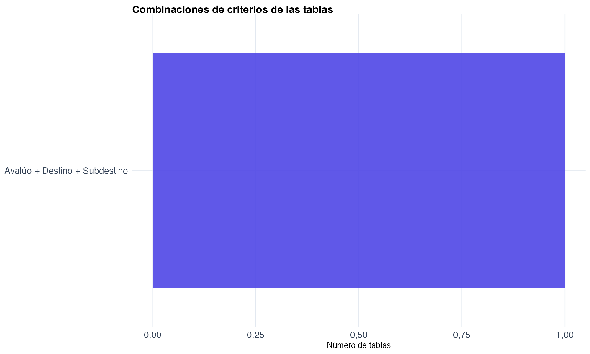
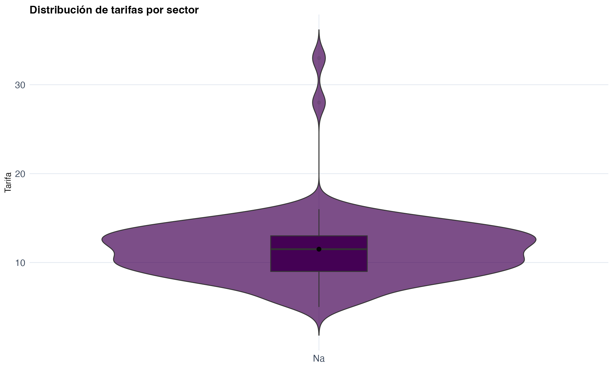
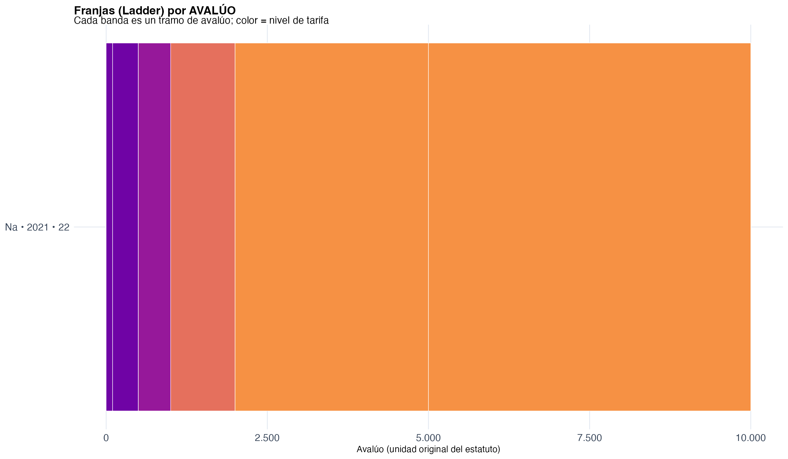

| mpio | anio | tipo | numero | observaciones | enlace_pdf |
|---|---|---|---|---|---|
| URRAO | 2020 | ESTATUTO | 26 | NA | No disponible |
| URRAO | 2021 | MODIFICACIÓN | 22 | Modifica la clasificación de destinos económicos | No disponible |
Análisis estatuto de Urrao
Este proyecto presenta un análisis exhaustivo de los estatutos tributarios del municipio de Para el análisis del municipio de , enfocándose específicamente en la estructura del impuesto predial. El estatuto fue acompañado de un análisis jurídico y de contenido detallado del capítulo de impuestos prediales contenido en sus estatutos de rentas.
Para el análisis del municipio se tuvieron en cuenta los siguientes estatutos y modificaciones:
Para ver más análisis agregados y los detalles metodológicos puede visitar este enlace (ir).
1 Estadísticas del municipio
## Resumen estadístico
- **Total de registros analizados:** 2
- **Período analizado:** 2020 - 2021
- **Años con estatutos:** 2020, 2021
- **Tipos de normativa:** ESTATUTO, MODIFICACIÓN
- **Representación en el estudio:** 0.2 % del total departamental2 Análisis de estructura tarifaria
2.1 Combinaciones de criterios tarifarios
Este gráfico muestra las diferentes combinaciones de criterios utilizados en la estructura tarifaria del municipio:

Descripción: Visualización de las combinaciones de criterios (avalúo, área, destino, estrato, etc.) utilizadas para determinar las tarifas prediales en Urrao .
Interpretación: Cada combinación representa una regla específica del estatuto tributario. Mayor número de combinaciones indica mayor complejidad normativa.
2.2 Distribución de tarifas
La distribución de tarifas muestra el rango y frecuencia de las diferentes tarifas prediales establecidas:

Descripción: Histograma que muestra la distribución de las tarifas prediales por mil (‰) establecidas en el estatuto de Urrao .
Interpretación: La forma de la distribución indica si el municipio tiende hacia tarifas uniformes (distribución concentrada) o hacia un esquema más diversificado (distribución dispersa).
3 Análisis de progresividad
3.1 Progresividad por avalúo
El análisis de progresividad por avalúo evalúa si las tarifas aumentan proporcionalmente con el valor del predio:

Descripción: Gráfico ladder que muestra la relación entre rangos de avalúo (en UVT) y las tarifas correspondientes en Urrao .
Interpretación: Una tendencia ascendente consistente indica progresividad, donde predios de mayor valor pagan tarifas proporcionalmente más altas. Escalones horizontales indican tramos con tarifa fija.
3.2 Progresividad por área
3.2.1 Análisis de progresividad por área (generado dinámicamente)
No fue posible generar el análisis de progresividad por área para este municipio. Motivo: Datos de transcripción no disponibles o incompletos.
4 Contexto departamental
4.1 Posición relativa en Antioquia
- Ranking por complejidad normativa: 24 de 88 municipios
- Número de reglas: 2
- Clasificación: Complejidad normativa medio-alta
4.2 Visualizaciones del contexto departamental
{kind=link}
{kind=link}
{kind=link}
{kind=link}
{kind=link}
5 Documentos de referencia
5.1 Estatutos y documentos fuente
Los documentos fuente están en proceso de digitalización.
5.2 Metodología del análisis
Este análisis forma parte del proyecto de sistematización de estatutos tributarios de Antioquia, que incluye:
- Transcripción normativa: Conversión de estatutos físicos a formato digital estructurado
- Categorización: Identificación de criterios tarifarios (avalúo, área, destino, estrato)
- Análisis de progresividad: Evaluación de la coherencia y equidad del sistema tarifario
- Comparación intermunicipal: Benchmarking con otros municipios del departamento
Para más información sobre la metodología completa, consulte el análisis departamental.
6 Resumen visual integrado
6.1 Dashboard de análisis tributario
Este resumen integra los principales hallazgos del análisis tributario de Urrao :
Dashboard visual no disponible para este municipio.
7 Estadísticas avanzadas del municipio
7.1 Análisis temporal de la normativa
7.1.1 Evolución de la actividad normativa
- Años con mayor actividad normativa: 2020, 2021
- Período de mayor estabilidad: Actividad normativa continua en el período analizado
7.2 Tipología normativa
7.2.1 Distribución por tipo de normativa
Instrumento normativo predominante: ESTATUTO ( 1 registros, 50 %) ## Comparación departamental
Registros de este municipio: 2
Promedio departamental: 11.4
Mediana departamental: 1
Clasificación: Por debajo del promedio departamental ( 82.4 % menos registros)
Percentil departamental: 94.3 % ( 5.7 % de municipios tienen más registros)
8 Recomendaciones específicas
8.1 Recomendaciones de política tributaria
Basándose en el análisis comparativo, se sugieren las siguientes recomendaciones:
8.1.1 Optimización del esquema actual (Complejidad media)
- Eficiencia: Evaluar la efectividad del esquema actual en términos de recaudo y equidad
- Actualización periódica: Establecer cronogramas regulares de revisión normativa
- Monitoreo: Implementar indicadores de seguimiento a la aplicación de tarifas
- Participación: Involucrar a la ciudadanía en procesos de actualización normativa
8.1.2 Recomendaciones generales
- Transparencia: Publicar de manera clara y accesible todas las tarifas vigentes
- Tecnología: Aprovechar herramientas digitales para mejorar la gestión tributaria
- Equidad: Evaluar periódicamente el impacto distributivo del sistema tarifario
- Coordinación: Mantener coherencia con las políticas tributarias departamentales